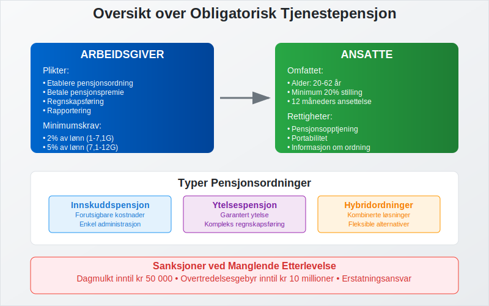
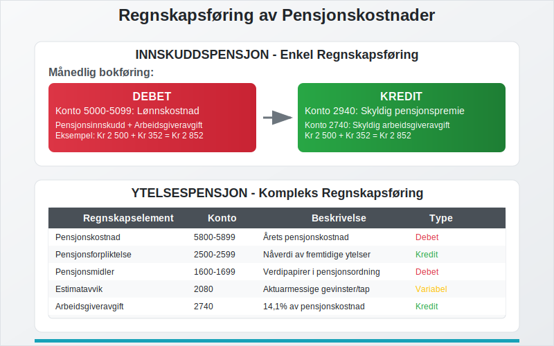
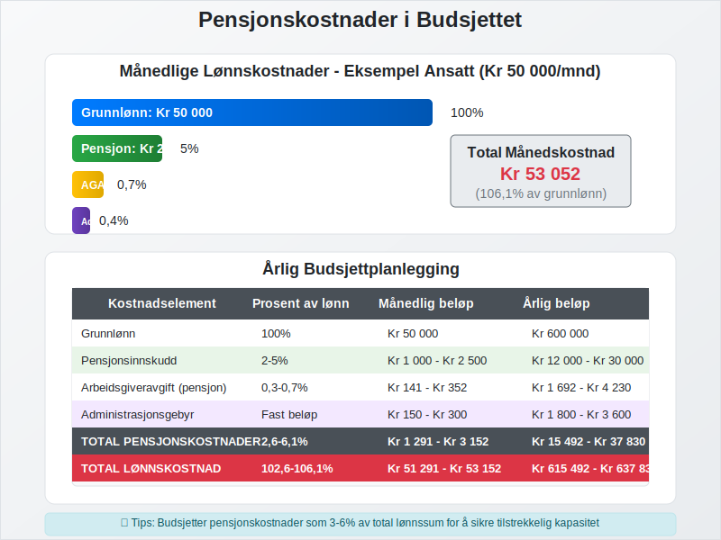
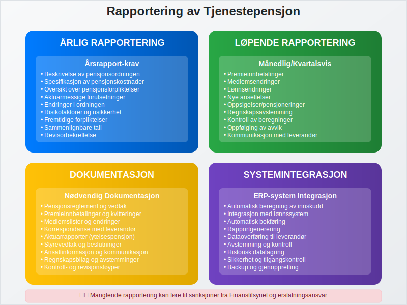

Obligatorisk tjenestepensjon (OTP) er en lovpålagt pensjonsordning som alle norske arbeidsgivere må etablere for sine ansatte. Ordningen ble innført i 2006 gjennom lov om obligatorisk tjenestepensjon, og representerer en viktig del av det norske pensjonssystemet ved siden av folketrygden. For en komplett oversikt over tjenestepensjon generelt, inkludert ulike typer ordninger og regnskapsbehandling.
Merk at ansatte i offentlig sektor har egne pensjonsordninger med egne regelverk. Les mer i Offentlig tjenestepensjon.
Arbeidsgivere kan også tilby en Frivillig innskuddspensjon utover lovpålagt innskudd for å tiltrekke og beholde ansatte.
For ansatte som ønsker mer oversikt og fleksibilitet, kan de benytte Egen pensjonskonto for å samle pensjonsmidler fra flere arbeidsgivere.
For bedrifter innebærer obligatorisk tjenestepensjon betydelige regnskapsmessige konsekvenser som må håndteres korrekt i regnskapet og lønnskostnader.
Seksjon 1: Lovkrav og Arbeidsgiverplikter
Alle arbeidsgivere i Norge som har ansatte i minst 20% stilling, må etablere obligatorisk tjenestepensjon. Dette gjelder uavhengig av bedriftens størrelse eller organisasjonsform.

Hvem er omfattet av ordningen?
Arbeidsgivere som må etablere OTP:
- Alle aksjeselskaper med ansatte
- Enkeltpersonforetak med ansatte
- Ansvarlige selskaper med ansatte
- Offentlige virksomheter og kommuner
- Ideelle organisasjoner med ansatte
Ansatte som omfattes:
- Alle ansatte mellom 20 og 62 år
- Minimum 20% stilling
- Ansettelsesforhold på minst 12 måneder
Unntak fra ordningen
Enkelte grupper er unntatt fra kravet om obligatorisk tjenestepensjon:
- Ansatte som allerede har tjenestepensjonsordning som oppfyller minimumskravene
- Ansatte i offentlig sektor med eksisterende pensjonsordninger
- Selvstendig næringsdrivende uten ansatte
- Familiemedlemmer i enkeltpersonforetak
Seksjon 2: Pensjonsordninger og Alternativer
Arbeidsgivere kan velge mellom flere typer pensjonsordninger for å oppfylle kravet til obligatorisk tjenestepensjon.

Innskuddsbasert Pensjon
Innskuddspensjon er den mest vanlige løsningen for små og mellomstore bedrifter:
| Innskuddssats | Lønnstrinn | Minimum årlig innskudd |
|---|---|---|
| 2% | 1-7,1G* | Kr 7 500 - Kr 37 000 |
| 5% | 7,1-12G* | Kr 37 000 - Kr 62 000 |
*G = Grunnbeløpet i folketrygden
Fordeler med innskuddspensjon:
- Forutsigbare kostnader for arbeidsgiver
- Enkel administrasjon
- Fleksibilitet i investeringsvalg
- Portable rettigheter for ansatte
Ytelsesbasert Pensjon
Ytelsespensjon garanterer en bestemt pensjonsytelse basert på sluttlønn og tjenestetid:
- Minimum 2% av lønn mellom 1-12G per tjenesteår
- Maksimalt 66% av sluttlønn etter 30 års tjeneste
- Mer kompleks regnskapsføring
- Høyere administrasjonskostnader
Hybridordninger
Mange større bedrifter velger hybridløsninger som kombinerer elementer fra både innskudds- og ytelsesbaserte ordninger.
Seksjon 3: Regnskapsføring av Pensjonskostnader
Regnskapsføring av obligatorisk tjenestepensjon krever nøye oppfølging av både løpende kostnader og fremtidige forpliktelser.

Innskuddspensjon - Regnskapsbehandling
For innskuddsbaserte ordninger er regnskapsføringen relativt enkel:
Månedlig bokføring:
Debet: Lønnskostnad (konto 5000-5099)
Kredit: Skyldig pensjonspremie (konto 2940)
Ved betaling av premie:
Debet: Skyldig pensjonspremie (konto 2940)
Kredit: Bank (konto 1920)
Ytelsespensjon - Regnskapsbehandling
Ytelsesbaserte ordninger krever mer kompleks regnskapsføring i henhold til regnskapsstandard:
| Regnskapselement | Konto | Beskrivelse |
|---|---|---|
| Pensjonskostnad | 5800-5899 | Årets pensjonskostnad |
| Pensjonsforpliktelse | 2500-2599 | Nåverdi av fremtidige ytelser |
| Pensjonsmidler | 1600-1699 | Verdipapirer i pensjonsordning |
| Estimatavvik | 2080 | Aktuarmessige gevinster/tap |
Arbeidsgiveravgift på Pensjon
Arbeidsgiveravgift må beregnes på pensjonspremier:
- Standard sats: 14,1% (varierer etter geografisk sone)
- Gjelder både innskudds- og ytelsesbaserte ordninger
- Må inkluderes i arbeidsgiveravgift-beregningen
Seksjon 4: Kostnader og Budsjettplanlegging
Pensjonskostnader utgjør en betydelig del av bedriftens totale lønnskostnader og må planlegges nøye.

Beregning av Årlige Pensjonskostnader
For innskuddspensjon:
Årlig pensjonskostnad = (Lønn × Innskuddssats) + Administrasjonsgebyr + Arbeidsgiveravgift
Eksempel beregning:
- Ansatt med årslønn: Kr 500 000
- Innskuddssats: 5%
- Årlig innskudd: Kr 25 000
- Arbeidsgiveravgift (14,1%): Kr 3 525
- Administrasjonsgebyr: Kr 2 000
- Total årlig kostnad: Kr 30 525
Budsjettplanlegging
Pensjonskostnader bør integreres i bedriftens budsjettering:
Månedlige kostnader:
| Kostnadselement | Prosent av lønn | Månedlig beløp* |
|---|---|---|
| Pensjonsinnskudd | 2-5% | Kr 833 - Kr 2 083 |
| Arbeidsgiveravgift | 0,3-0,7% | Kr 125 - Kr 292 |
| Administrasjon | Fast beløp | Kr 150 - Kr 300 |
*Basert på gjennomsnittlig månedslønn Kr 41 667
Seksjon 5: Valg av Pensjonsleverandør
Valg av riktig pensjonsleverandør påvirker både kostnader og administrative byrder for bedriften.
Sammenligning av Leverandører
Viktige faktorer ved valg:
- Kostnadsstruktur: Administrasjonsgebyrer og forvaltningskostnader
- Investeringsalternativer: Antall fond og risikoprofiler
- Digital løsning: Integrasjon med lønnssystem
- Kundeservice: Tilgjengelighet og kompetanse
- Rapportering: Kvalitet på rapporter til arbeidsgiver og ansatte
Leverandørkategorier
| Leverandørtype | Fordeler | Ulemper |
|---|---|---|
| Tradisjonelle forsikringsselskaper | Erfaring, stabilitet | Høyere kostnader |
| Banker med pensjonsdivisjon | Helhetlige tjenester | Begrenset spesialisering |
| Rene pensjonsleverandører | Lave kostnader, digitale løsninger | Mindre erfaring |
Seksjon 6: Rapportering og Dokumentasjon
Obligatorisk tjenestepensjon krever systematisk rapportering og dokumentasjon som del av bedriftens internkontroll.

Årlig Rapportering
Årsrapport-krav:
- Beskrivelse av pensjonsordningen i årsrapporten
- Spesifikasjon av pensjonskostnader
- Oversikt over pensjonsforpliktelser (ytelsespensjon)
- Aktuarmessige forutsetninger og endringer
Løpende Dokumentasjon
Nødvendig dokumentasjon:
- Pensjonsreglement og vedtak
- Premieinnbetalinger og kvitteringer
- Medlemslister og endringer
- Korrespondanse med pensjonsleverandør
- Aktuarrapporter (ytelsespensjon)
Integrasjon med Regnskapssystem
Moderne ERP-systemer kan automatisere mye av pensjonsadministrasjonen:
- Automatisk beregning av pensjonsinnskudd
- Integrasjon med lønnssystem
- Automatisk bokføring av pensjonskostnader
- Rapportgenerering for myndigheter
Seksjon 7: Sanksjoner og Konsekvenser
Manglende etablering av obligatorisk tjenestepensjon kan få alvorlige konsekvenser for arbeidsgivere.
Sanksjoner fra Finanstilsynet
Finanstilsynet kan ilegge følgende sanksjoner:
- Dagmulkt: Inntil Kr 50 000 per dag
- Overtredelsesgebyr: Inntil Kr 10 millioner
- Offentliggjøring: Av overtredelsen
- Pålegg: Om umiddelbar etablering av ordning
Erstatningsansvar
Arbeidsgivere kan bli erstatningsansvarlige overfor ansatte for:
- Tapt pensjonsopptjening
- Renter og omkostninger
- Advokatkostnader i rettssaker
Skattemessige Konsekvenser
Manglende pensjonsinnskudd kan påvirke:
- Fradragsrett for lønnskostnader
- Beregning av arbeidsgiveravgift
- Forhold til skattemyndighetene
Seksjon 8: Fremtidige Endringer og Utvikling
Pensjonssystemet er i kontinuerlig utvikling, og bedrifter må følge med på endringer som påvirker obligatorisk tjenestepensjon.
Kommende Regelverksendringer
Forventede endringer:
- Økte minimumskrav til innskuddssatser
- Strengere krav til investeringsalternativer
- Forbedret portabilitet mellom ordninger
- Digitalisering av rapportering
Bærekraft og ESG
Tjenestepensjon blir stadig viktigere i ESG-sammenheng:
- Bærekraftige investeringsalternativer
- Rapportering av klimarisiko i pensjonsporteføljer
- Sosial bærekraft og ansattes velferd
- Governance-aspekter ved pensjonsstyring
Konklusjon
Obligatorisk tjenestepensjon er en kompleks, men viktig del av norsk arbeidsliv som krever grundig forståelse og systematisk håndtering. For bedrifter innebærer dette:
Viktige takeaways:
- Lovpålagt ordning for alle arbeidsgivere med ansatte
- Betydelige regnskapsmessige konsekvenser som må håndteres korrekt
- Valg mellom ulike pensjonsordninger basert på bedriftens behov
- Løpende administrasjon og rapportering som del av internkontrollen
- Alvorlige sanksjoner ved manglende etterlevelse
Ved å etablere gode rutiner for håndtering av obligatorisk tjenestepensjon sikrer bedrifter både regelverksetterlevelse og en god pensjonsordning for sine ansatte. Dette bidrar til å styrke bedriftens attraktivitet som arbeidsgiver og sikrer langsiktig bærekraft i personalforvaltningen.
For bedrifter som trenger hjelp med implementering av obligatorisk tjenestepensjon, anbefales det å konsultere med regnskapsførere eller pensjonskonsulenter som kan gi skreddersydde råd basert på bedriftens spesifikke situasjon.